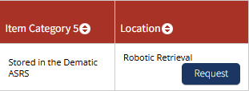

List of Physical Locations
Folder with all available location inventories minus vault
Old Building Locations (NO LONGER IN USE)
- X-A-4 - note that there’s no “v” or “VAULT” to indicate vault location
- X-C-Top - note that there’s no “v” or “VAULT” to indicate vault location
- 8th floor, LXXVII-LXVIII
- 6th Floor Stacks
- I-A-4, Box 1 - possibly translates to a Box-Level location
ASRS Locations
- ASRS in Local call number field
- Robotic Retrieval in holdings table Location column

Vault Locations
- I-A-6v - the “v” at the end is the indicator it’s a vault location
- I-A-Topv - Top just indicates the top shelf in that section
- VAULT I-A-6 - some older records may have the vault location listed like this
- Vault locations in finding aid PDFs in catalog will not be up-to-date, so use locations listed in catalog record
Vault Inventory
Special Collections Locations
Compact Shelving
- CS-4-A-4 - correct formatting
- CS 4-A-4 (missing hyphen between CS and 4) - incorrect formatting
- Special Collections, Range 4 - old way of formatting compact shelving location, may or may not be correct, but don’t dig into it now
Combined Storage Ranges (not totally up to date)
Flat File Drawers
- M-14-6 - this is the correct format
- MAP 4484 - this one also correct
- MSS Drawer 5 - old way of formatting drawer locations but could still be correct
- Drawer 5 - old way of formatting drawer locations but could still be correct
- MANUSCRIPT MAP DRAWER 2-3, 8TH FLOOR - this should translate to MSS Drawers 2 and 3 in Special Collections, can drop “8TH FLOOR” once confirmed
Every existing inventory of flat files (mostly for researching locations or translating MSS Drawers to M-#-# locations)
Oversize Locations
- ACS OV 2-A-2 - oversize storage room next to Emma
- MXL-1-6 - oversize flat files in the ASRS operator room
Box-Level Locations
- M-42 - Manuscript Files Collection Box 42
- S-2 - Small Collections Box 2
- P-27 - Photograph Collections Box 27
- V-4 - Vault Collections Box 4
- THS-4 - Tennessee Historical Society Small Collections Box 4 (this one is confusing because the box number is similar to the formatting for the accession number, example: AC. NO. THS 28
- I-A-4, Box 1 - old location, can translate using this document: Box Shift Key